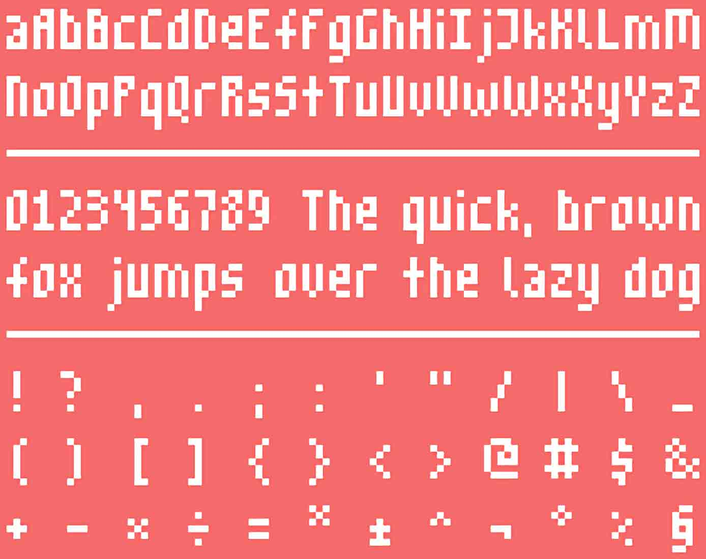
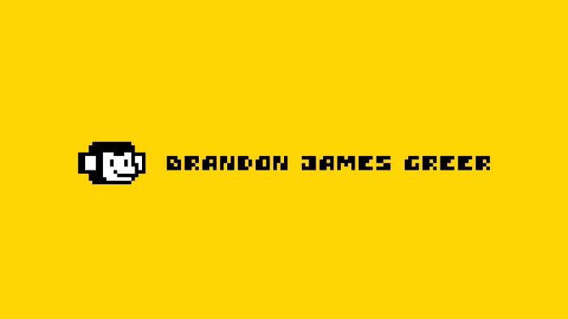
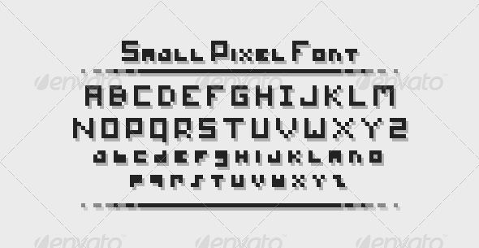

Mobile Game Interaction Design
The Challenge: Get user feedback and improve the player experience of my game, “Hold My Hand”.
My Role: Player Movement System, Game Tutorial and Art
Project Length: 3 Weeks
“Hold My Hand” - A Mobile Game
The Game “Hold My Hand” is an endless runner mobile game that I started with a friend during a game jam. The theme of the game jam was “Stronger Together”. Our Idea was an endless runner where you control 2 players and you can hold hands to jump higher.
I was really happy with the direction the game was going in, so I decided to add further polish after the jam.
2 weeks later “Hold My Hand” was complete. It was fun to play and I was proud of the finished product.
I was happy with the end result, but it took a lot of Design iterations to get to this point. In this case study, I talk about the evolution of “Hold My Hand” and how I used qualitative user feedback to get it to where it is now.
Control Scheme Iterations
At the early stages of game design, I didn’t expect to go through as many control scheme iterations as I did. I was confident that the system I first chose would be fun and engaging. (It really wasn’t)
First Control Scheme
My very first requirement when designing a control scheme was that it had to be simple. Many mobile games don’t use more than one finger and I wanted my game to have the same convenient appeal.
Here is the first control scheme:
- Swipe down to toggle link.
- Swipe up to jump. (Both Players)
- Tap to toggle players to the outer / inner lane.
Out of all the control scheme’s this one was the best when it comes to usability. The only problem... It wasn’t fun. It was intuitive and easy to learn, however, the mechanic of switching between limited “player position combinations'' was monotonous. I didn’t bother having others play test at this stage because I knew it could be better.
I wanted to move towards a control scheme that allowed for individual control over the two players.
Second Control Scheme
After recognizing that individual control of the two players was important, I began working on a new control scheme. Although this control scheme would have to use 2 fingers, I wanted the controls to remain simple.
Here is my solution to this problem:
(Complicated on paper, but hopefully the diagram illustrates how intuitive this is.)
- Keep two fingers on the screen to control each player.
- The players follow each finger at the corresponding sides of the screen.
- Move your finger up to jump the corresponding player.
- Keep one finger on the screen to control linked players.
- The linked players follow your single finger.
- Move that finger up to jump.
Final Control Scheme
This time around I had a lot of qualitative data from previous playtesting to come up with a good control scheme. Here’s my final solution:
- Control the players using either side of the screen: swipe left / right to move, and up to jump.
- Swipe Down anywhere to link
- Control linked players by using any part of the screen: swipe left / right to move, and up to jump.
Even this control scheme wasn’t perfect at first. At an early stage of developing these controls, you had to tap either side of the screen to move players (toggle their position). The problem with this should have been obvious to me: mixing swipes and taps was confusing. This was pointed out a lot when playtesting with friends and family.
Once this system was finalized, I playtested and there were zero complaints! (about the input system at least)
Clear Communication at a Low Resolution
Fonts
With the resolution constraints, finding a readable font for this game was a challenge. The UI that I designed required a small font and a large font. Here were the fonts that I went with:
M3X6 by Daniel Linssen 
A Font by Brandon James Greer
Here’s an example of a font that I decided on not going with (the readability on some letters wasn’t great.)
Small Pixel Font from graphicriver.net
Tutorial Instructions
Creating good tutorial instructions was another challenge at such a low resolution. I didn’t want to cram a lot of information. I was limited to only a few words and symbols. My approach for creating the tutorial was to think about the most important information and what information could be left out and inferred by the player. I couldn’t be verbacious with only a few words, and had to explain the essentials and leave some information up to inference.
Other UX Improvements
Some other things that I noticed during playtesting were the following:
It took some time for people to find a good phone grip that worked for them. I made the user experience more seamless by recommending a grip.
Players that use reading glasses and have a harder time seeing things up close, struggled to differentiate between different obstacles. There wasn’t a good way to make obstacles extra clear with the art direction and graphics of the game. This was a stylistic oversight, but I didn’t want to ignore the problem. To make the experience more enjoyable for them I added an “Easy Visibility” option in the settings.
Conclusion
Getting feedback from a variety of users helped to perfect the control scheme, increase clarity in the UI, and improve the overall user experience. The time that I spent talking with the people that played my game was definitely worth it and I’m happy with the final product.
I made some oversites early in development, which cost me time later on, but learned how critical initial UX considerations are.
After playtesting with friends and family the game is ready to ship, and I’m ready for a higher volume of user feedback.